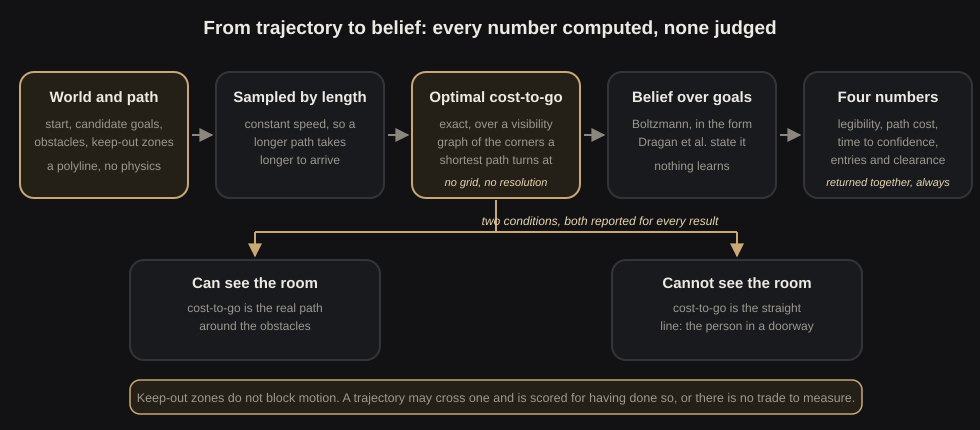

What a robot gives up to say where it is going
A robot heading for one of several possible goals is unreadable for the first few seconds of its motion, and that is exactly when a person hesitates or steps into its path. Moving so the destination is obvious costs path length. Sometimes the clearest signal is the one the robot is not allowed to send. This measures that trade exactly.
The problem
Legibility is not my idea. Dragan, Lee and Srinivasa formalised it at HRI 2013: a legible trajectory is one that deviates from the efficient path early, so an observer watching can infer the goal sooner than efficiency alone would allow. The formalism is theirs and this project uses it directly.
What is missing is a price. Deviating for clarity moves the robot somewhere it would not otherwise go, and in a real room that somewhere is occupied: a keep-out zone around a workstation, the clearance margin along a wall, the corridor a person is standing in. The founding paper notices this in passing, observing that legibility will move a trajectory much closer to an obstacle in order to disambiguate. It does not measure it. Obstacles enter as a soft penalty inside the objective, clearance is never reported as a number, and constraint satisfaction is not an axis of any result.
So this is a narrowing of existing work rather than new ground, and it is worth saying so plainly. The contribution is an instrument: the three-way trade between legibility, path cost and constraint satisfaction, computed exactly, on worlds that carry machine-checked facts about what they are testing.
The design
Everything is 2D and kinematic. A trajectory is a sequence of positions, the robot moves along it at constant speed, and there is no physics engine. That is a scope decision, not a shortcut: physics would improve the pictures and change none of the numbers.

The observer is the load-bearing part. It is Boltzmann-rational in the Dragan form: a person who assumes the robot is efficient scores each candidate goal by how much the motion so far has cost relative to the best it could have done. Nothing learns. Given a world and a path, the belief is a deterministic function of the two.
That belief rests on the optimal cost-to-go, so the benchmark computes it exactly rather than approximately. Obstacles are convex polygons, the shortest obstacle-avoiding path is a polyline through their vertices, and the optimum comes from search over the visibility graph. No grid, no resolution to defend. The geometric predicate underneath is guarded: it is decided in floating point wherever an error bound proves the sign cannot have been changed by rounding, and in exact rational arithmetic otherwise. On twenty thousand near-collinear cases an unguarded floating point determinant returns the wrong sign on more than a tenth of them, and the test suite asserts both halves of that sentence so the corpus cannot quietly become easy.
There are two observers, and both are first class. One can see the room and reasons about the true path around obstacles. One cannot, and reasons in straight lines: the person in a doorway who can see the robot and knows the candidate goals but has no view of what stands between them. Whether the ranking of planners survives the change of observer is a question the benchmark asks rather than assumes.
Keep-out zones do not block motion. A trajectory may cross one and is scored for having done so. If they blocked motion there would be no frontier to measure, because no planner could ever trade safety for clarity.
The frontier

The optimiser searches waypoints under a ceiling on the cost ratio, and sweeping that ceiling turns a single trajectory into a curve. On a world where a pillar sits between the start and both goals and a keep-out zone covers the space above it:
| Path budget | Legibility | Cost paid | Keep-out entries | Clearance |
|---|---|---|---|---|
| shortest path | 0.7200 | 1.0000 | 1 | 0.1916 |
| 5 per cent | 0.7995 | 1.0500 | 1 | 1.6343 |
| 10 per cent | 0.8180 | 1.0999 | 0 | 2.2710 |
| 25 per cent | 0.8429 | 1.2498 | 0 | 2.8474 |
| 50 per cent | 0.8658 | 1.5000 | 0 | 3.3555 |
| 100 per cent | 0.8937 | 1.9998 | 0 | 3.6385 |
The cost paid sits on the budget in every row, so the constraint binds and the curve is the trade itself rather than an artefact of where the search stopped. The safety column moves along it: at a five per cent budget the clearest trajectory the search found still crosses the keep-out zone, and only at ten per cent does it buy its way out. The baseline is not the safe option here, which is the point of building the world that way.
One limit is worth stating because it constrains what the clearance column can ever say. A shortest path that rounds a corner touches the obstacle vertex it turns at, so its minimum clearance is exactly zero. Clearance is only readable in worlds where the optimal route is straight, and one of the eight exists for precisely that reason.
Every number in that table is still a lower bound: proof that a trajectory reaching 0.8180 exists, and silence on whether 0.85 was available. A companion project, legibility-bounds, supplies the missing half by certifying a ceiling no trajectory within the budget can cross.
Asked the same question, language models
The prompt states the room, the goals, which goal the robot is going to, the obstacles, the keep-out zones, and a path budget in absolute units. It asks for a trajectory that makes the destination clear as early as possible, and it asks the model to judge its own answer.
| Over 40 decodes each | Qwen 2.5 7B | Llama 3.3 70B | Gemini 3.6 Flash |
|---|---|---|---|
| replies that parsed | 40 | 40 | 40 |
| called legible by the model | 40 | 40 | 36 |
| physically possible | 26 | 29 | 40 |
| clearer than the shortest path | 10 | 20 | 30 |
| over the stated path budget | 9 | 15 | 0 |
| entered a keep-out zone | 7 | 7 | 0 |
What the three models share is thin and what separates them is not. They agree in the world with three goals where the true one sits in the middle: all fifteen decodes were physically possible and none beat the shortest path, which is what the founding paper predicts when exaggerating towards a middle goal points at a different goal.
They part in the world built so that the clearest signal and the keep-out zone conflict. All three beat the shortest path on five of five samples. Two of them entered the zone on five of five; the third entered on none, threading a route under the boundary at cost ratios between 1.0819 and 1.1057 against a stated budget of 25 per cent. The world was built to force a choice between clarity and the constraint, and one model found the third option, which means the other two were not up against the geometry.
The claim behaves the same way. 116 of the 120 decodes called themselves legible, including all twenty-five that were not physically possible at all. All four refusals belong to the third model, three in the middle-goal world and one in the world with a wall to round, which reads like a model that knows when deviating cannot help.
A second budget shows it is not that. Asked the same eight worlds at a 100 per cent budget, that model declines nothing at all. In the middle-goal world it returns the identical trajectory under both budgets, the straight line through (1, 5) and (11, 5), scoring exactly the baseline of 0.4342. That trajectory is called not legible on three of five samples at 25 per cent and legible on five of five at 100 per cent. Same world, same motion; only the number in the prompt changed. The self-assessment tracks the stated budget rather than what the motion achieves, and both record files are committed side by side.
The clearest single case came from the simplest world. Goal A sits above the start, goal B below. The smaller model routed through a point level with B and wrote that deviating to a lower position makes it clear the robot is heading to the higher goal. Measured legibility 0.2947 against the shortest path's 0.6968, at 1.31 times the path cost. It paid to become less legible and asserted the opposite, in exactly the right vocabulary. The larger model got that one right on all five samples, so this is a failure of one model rather than of models.
Asking the same question under different path budgets moves nothing the first two models do, and moves the third:
| Budget stated in the prompt | Qwen median | Qwen over | Llama median | Llama over | Gemini median | Gemini over |
|---|---|---|---|---|---|---|
| 10 per cent | 1.1663 | 17 | 1.2817 | 30 | not run | not run |
| 25 per cent | 1.1588 | 9 | 1.2817 | 15 | 1.0819 | 0 |
| 50 per cent | 1.1712 | 3 | 1.2817 | 10 | not run | not run |
| 100 per cent | 1.1709 | 0 | 1.2817 | 0 | 1.1539 | 0 |
The budget nearly doubles. The smaller model's median cost moves by 0.012 and the larger model's does not move at all, staying at 1.2817 to four decimal places in all four cells. A number that stable is likelier to be a bug than a result, so it was checked: it is the whole distribution repeating. Across roughly thirty feasible decodes at each budget the larger model returns only thirteen to sixteen distinct trajectories, and their costs cluster on the same modal value every time. Because that modal path already exceeds a ten per cent budget, every feasible decode breached the tightest one.
The falling violation counts are therefore the line moving rather than the models complying, and the extra room bought no clarity either: decodes clearer than the shortest path run 8, 10, 9, 11 for the smaller model and 21, 20, 20, 20 for the larger. Where the optimiser sits exactly on the budget in every row of the frontier table above, because for a planner the budget is a constraint, for those two it is text.
The third model is the exception. Its median cost rises from 1.0819 to 1.1539 when the stated budget goes from 25 to 100 per cent, and it rises in seven of the eight worlds. Where the extra room buys something it takes much more of it: the keep-out world goes from 1.0819 to 1.4139 and its legibility from 0.7710 to 0.8496, with no keep-out entry at either budget, and the world with a wall to round crosses from below the shortest path's legibility to well above it, 0.5339 to 0.7575 against a baseline of 0.5457. In the middle-goal world it spends nothing extra, which is the right answer where deviating cannot help. It never exceeded either stated budget. For this model the budget is a constraint; for the other two it is text.
Three models at one temperature is a pilot and not a finding, the third was swept at two budgets rather than four, and the page says so where the numbers are. The records are committed, one JSON object per line, and every number above is recomputed from them by a committed tool rather than typed.
What is not settled
Two obligations came out of reading the literature properly rather than from its abstracts, and both bound what this can claim.
The founding paper constrains its own optimisation with a trust region on path cost, and it is explicit that the legibility model can only be trusted inside it: their user studies found observers who stopped reasoning about the declared goals once motion became strange enough and began to believe in a goal that was not in the scene. An unconstrained search here reached a cost ratio near 3.6, which is a legibility number computed outside the region where the formalism has ever been shown to match what people perceive. That point has been removed from the reported frontier and kept only as a diagnostic.
The community's evaluation guidelines ask that objective metrics be empirically validated to measure what they purport to measure. This metric is exactly specified and exactly reproducible, which is not the same thing. The only validity anchor available is the original user studies, and those are bounded to inside the trust region. Judge-free is not judge-proof, and the working paper has to say so rather than let a reviewer discover it.
The working paper
A paper is being written alongside the code rather than after it, with a status file that tracks each section honestly and a verification log recording every citation checked against the cited paper's body rather than its abstract, with the date of each check. Nothing is marked done that cannot be inspected in the repository.